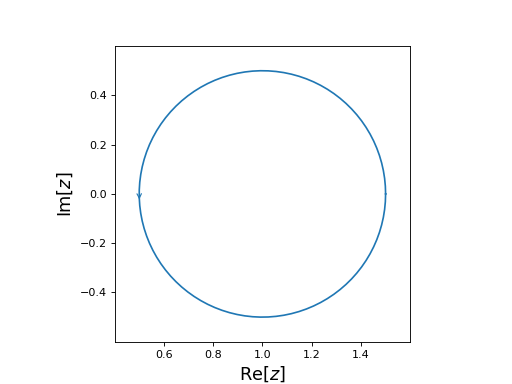
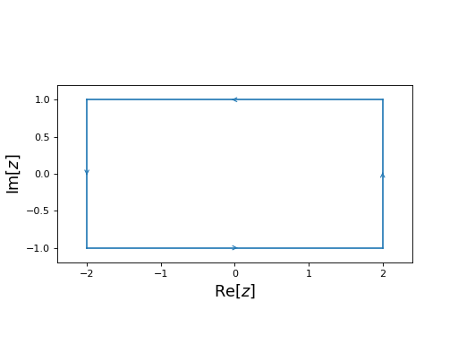
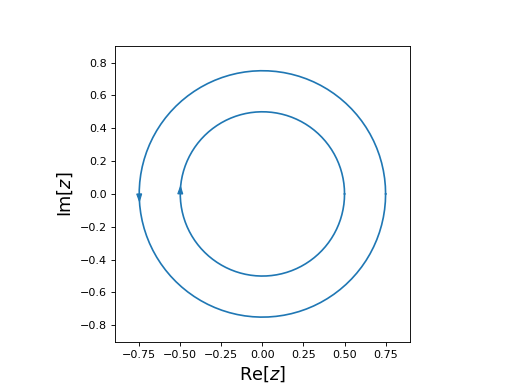
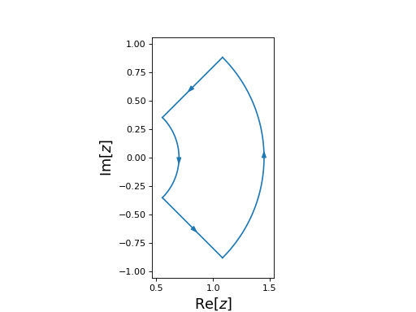
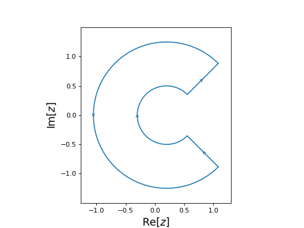

Contours¶
The cxroots module allows the user to specify four different types of contours which are all subclasses of Contour:
-
class
cxroots.Contour.Contour(segments)[source]¶ A base class for contours in the complex plane.
-
centralPoint¶ complex – The point at the center of the contour.
-
area¶ float – The surface area of the contour.
-
__call__(t)[source]¶ The point on the contour corresponding the value of the parameter t.
Parameters: t (float) – A real number \(0\leq t \leq 1\) which parameterises the contour. Returns: A point on the contour. Return type: complex Example
>>> from cxroots.Paths import Circle >>> c = Circle(0,1) # Circle |z|=1 parameterised by e^{it} >>> c(0.25) (6.123233995736766e-17+1j) >>> c(0) == c(1) True
-
approximate_roots(N, f, df=None, absTol=1e-12, relTol=1e-12, errStop=1e-10, divMin=3, divMax=15, m=2, rootTol=1e-08, intMethod='quad', callback=None, verbose=False)¶ Approximate the roots and multiplcities of the function f within the contour C using the method of [KB]. The multiplicites are computed using eq. (21) in [SLV].
Parameters: - N (int) – The number of roots (counting multiplicties) of f within C.
This is the result of calling
count_roots(). - f (function) – The function for which the roots are sought. Must be a function of a single complex variable, z, which is analytic within C and has no poles or roots on the C.
- df (function, optional) – A function of a single complex variable which is the derivative of the function f(z). If df is not given then it will be approximated with a finite difference formula.
- absTol (float, optional) – Absolute error tolerance for integration.
- relTol (float, optional) – Relative error tolerance for integration.
- errStop (float, optional) – The number of distinct roots within a contour, n, is determined by checking if all the elements of a list of contour integrals involving formal orthogonal polynomials are sufficently close to zero, ie. that the absolute value of each element is < errStop. If errStop is too large/small then n may be smaller/larger than it actually is.
- divMin (int, optional) – If the Romberg integration method is used then divMin is the minimum number of divisions before the Romberg integration routine is allowed to exit.
- divMax (int, optional) – If the Romberg integration method is used then divMax is the maximum number of divisions before the Romberg integration routine exits.
- m (int, optional) – Only used if df=None and method=’quad’. The argument order=m is passed to numdifftools.Derivative and is the order of the error term in the Taylor approximation. m must be even.
- rootTol (float, optional) – If any roots are within rootTol of one another then they will be treated as duplicates and removed. This helps to alleviate the problem of errStop being too small.
- intMethod ({'quad', 'romb'}, optional) – If ‘quad’ then
scipy.integrate.quad()is used to perform integration. If ‘romb’ then Romberg integraion is performed instead. - callback (function, optional) – Only used if intMethod is ‘romb’. Passed to
~. - verbose (bool, optional) – If True certain information regarding the rootfinding process will be printed.
Returns: - tuple of complex – The distinct roots of f within the contour C.
- tuple of float – The corresponding multiplicites of the roots within C. Should be integers but will not be automatically rounded here.
References
[KB] P. Kravanja and M. Van Barel. “Computing the Zeros of Anayltic Functions”. Springer (2000) [SLV] E. Strakova, D. Lukas, P. Vodstrcil. “Finding Zeros of Analytic Functions and Local Eigenvalue Analysis Using Contour Integral Method in Examples”. Mathematical Analysis and Numerical Mathematics, Vol. 15, 2, (2017) - N (int) – The number of roots (counting multiplicties) of f within C.
This is the result of calling
-
contains(z)[source]¶ Tests whether the point z is within the contour.
Parameters: z (complex) – Returns: True if z lies within the contour and false otherwise. Return type: bool
-
count_roots(f, df=None, NIntAbsTol=0.07, integerTol=0.1, divMin=3, divMax=15, m=2, intMethod='quad', verbose=False)¶ For a function of one complex variable, f(z), which is analytic in and within the contour C, return the number of zeros (counting multiplicities) within the contour, N, using Cauchy’s argument principle,
\[N = \frac{1}{2i\pi} \oint_C \frac{f'(z)}{f(z)} dz.\]If df(z), the derivative of f(z), is provided then the above integral is computed directly. Otherwise the derivative is approximated using a finite difference method.
The number of roots is taken to be the closest integer to the computed value of the integral and the result is only accepted if the integral is within integerTol of the closest integer.
Parameters: - f (function) – Function of a single variable f(z).
- df (function, optional) – Function of a single complex variable, df(z), providing the derivative of the function f(z) at the point z. If not provided, df will be approximated using a finite difference method.
- NIntAbsTol (float, optional) – Required absolute error tolerance for the contour integration. Since the Cauchy integral must be an integer it is only necessary to distinguish which integer the integral is converging towards. Therefore, NIntAbsTol can be fairly large.
- integerTol (float, optional) – The evaluation of the Cauchy integral will be accepted if its value is within integerTol of the closest integer.
- divMin (int, optional) – Only used if intMethod=’romb’. Minimum number of divisions before the Romberg integration routine is allowed to exit.
- divMax (int, optional) – Only used if intMethod=’romb’. The maximum number of divisions before the Romberg integration routine of a path exits.
- m (int, optional) – Only used if df=None and intMethod=’quad’. The argument order=m is passed to numdifftools.Derivative and is the order of the error term in the Taylor approximation. m must be even.
- intMethod ({'quad', 'romb'}, optional) – If ‘quad’ then scipy.integrate.quad is used to perform the integral. If ‘romb’ then Romberg integraion, using scipy.integrate.romb, is performed instead.
- verbose (bool, optional) – If True certain messages regarding the integration will be printed.
Returns: The number of zeros of f (counting multiplicities) which lie within the contour C.
Return type: int
-
demo_roots(f, df=None, saveFile=None, automaticAnim=False, returnAnim=False, writer=None, **rootsKwargs)¶ An animated demonstration of the root finding process using matplotlib.
Parameters: - saveFile (str, optional) – If given then the animation will be saved to disk with filename equal to saveFile instead of being shown.
- automaticAnim (bool, optional) – If False (default) then press SPACE to step the animation forward If True then the animation will play automatically until all the roots have been found.
- returnAnim (bool, optional) – If True then the matplotlib animation object will be returned instead of being shown. Defaults to False.
- writer (str, optional) – Passed to
matplotlib.animation.FuncAnimation.save(). - **rootsKwargs – Additional key word arguments passed to
roots().
-
distance(z)[source]¶ Get the distance from the point z in the complex plane to the nearest point on the contour.
Parameters: z (complex) – The point from which to measure the distance to the closest point on the contour to z. Returns: The distance from z to the point on the contour which is closest to z. Return type: float
-
integrate(f, absTol=0, relTol=1e-12, divMax=15, intMethod='quad', verbose=False)¶ Integrate the function f along the path. The value of the integral is cached and will be reused if the method is called with same arguments (ignoring verbose).
Parameters: - f (function) – A function of a single complex variable.
- absTol (float, optional) – The absolute tolerance for the integration.
- relTol (float, optional) – The realative tolerance for the integration.
- divMax (int, optional) – If the Romberg integration method is used then divMax is the maximum number of divisions before the Romberg integration routine of a path exits.
- intMethod ({'quad', 'romb'}, optional) – If ‘quad’ then
scipy.integrate.quad()is used to compute the integral. If ‘romb’ then Romberg integraion, usingscipy.integrate.romberg(), is used instead. - verbose (bool, optional) – Passed ass the show argument of
scipy.integrate.romberg().
Returns: The integral of the function f along the path.
Return type: complex
Notes
This function is only used when checking the multiplicity of roots. The bulk of the integration for rootfinding is done with
cxroots.CountRoots.prod().
-
plot(N=100, linecolor='C0', linestyle='-')¶ Uses matplotlib to plot, but not show, the path as a 2D plot in the Complex plane.
Parameters: - N (int, optional) – The number of points to use when plotting the path.
- linecolor (optional) – The colour of the plotted path, passed to the
matplotlib.pyplot.plot()function as the keyword argument of ‘color’. See the matplotlib tutorial on specifying colours. - linestyle (str, optional) – The line style of the plotted path, passed to the
matplotlib.pyplot.plot()function as the keyword argument of ‘linestyle’. The default corresponds to a solid line. Seematplotlib.lines.Line2D.set_linestyle()for other acceptable arguments.
-
roots(f, df=None, guessRoots=[], guessRootSymmetry=None, newtonStepTol=1e-14, attemptIterBest=True, newtonMaxIter=50, rootErrTol=1e-10, absTol=0, relTol=1e-12, integerTol=0.1, NIntAbsTol=0.07, M=5, errStop=1e-10, intMethod='quad', divMin=3, divMax=15, m=2, verbose=False)¶ Find all the roots of the complex analytic function f within the given contour.
Parameters: - f (function) – A function of a single complex variable, z, which is analytic within the contour and has no poles or roots on the contour.
- df (function, optional) – A function of a single complex variable which is the derivative of the function f(z). If df is not given then it will be approximated with a finite difference formula.
- guessRoots (list, optional) – A list of known roots or guesses for roots (they are checked before being accepted).
- guessRootSymmetry (function, optional) – A function of a single complex variable, z, which returns a list of all points which are expected to be roots of f, given that z is a root of f.
- newtonStepTol (float, optional) – The required accuracy of the root. The iterative method used to give a final value for each root will exit if the step size, dx, between sucessive iterations satisfies abs(dx) < newtonStepTol and iterBestAttempt is False.
- attemptIterBest (bool, optional) – If True then the iterative method used to refine the roots will exit when error of the previous iteration, x0, was at least as good as the current iteration, x, in the sense that abs(f(x)) >= abs(f(x0)) and the previous iteration satisfied abs(dx0) < newtonStepTol. In this case the preivous iteration is returned as the approximation of the root.
- newtonMaxIter (int, optional) – The iterative method used to give a final value for each root will exit if the number of iterations exceeds newtonMaxIter.
- rootErrTol (float, optional) – A complex value z is considered a root if abs(f(z)) < rootErrTol
- absTol (float, optional) – Absolute error tolerance used by the contour integration.
- relTol (float, optional) – Relative error tolerance used by the contour integration.
- integerTol (float, optional) – A number is considered an integer if it is within integerTol of an integer. Used when determing if the value for the number of roots within a contour and the values of the computed multiplicities of roots are acceptably close to integers.
- NIntAbsTol (float, optional) – The absolute error tolerance used for the contour integration when determining the number of roots within a contour. Since the result of this integration must be an integer it can be much less accurate than usual.
- M (int, optional) – If the number of roots (including multiplicites) within a contour is greater than M then the contour is subdivided further. M must be greater than or equal to the largest multiplcity of any root.
- errStop (float, optional) – The number of distinct roots within a contour, n, is determined by checking if all the elements of a list of contour integrals involving formal orthogonal polynomials are sufficently close to zero, ie. that the absolute value of each element is < errStop. If errStop is too large/small then n may be smaller/larger than it actually is.
- intMethod ({'quad', 'romb'}, optional) – If ‘quad’ then
scipy.integrate.quad()is used to perform the integral. If ‘romb’ then Romberg integraion, usingscipy.integrate.romb(), is performed instead. Typically, quad is the better choice but it requires that the real and imaginary parts of each integral are calculated sepeartely, in addition, if df is not provided, ‘quad’ will require additional function evaluations to approximate df at each point that f is evaluated at. If evaluating f is expensive then ‘romb’ may be more efficient since it computes the real and imaginary parts simultaniously and if df is not provided it will approximate it using only the values of f that would be required by the integration routine in any case. - divMin (int, optional) – If the Romberg integration method is used then divMin is the minimum number of divisions before the Romberg integration routine is allowed to exit.
- divMax (int, optional) – If the Romberg integration method is used then divMax is the maximum number of divisions before the Romberg integration routine exits.
- m (int, optional) – Only used if df=None and method=’quad’. The argument order=m is
passed to
numdifftools.Derivative()and is the order of the error term in the Taylor approximation. m must be even. - verbose (bool, optional) – If True certain messages concerning the rootfinding process will be printed.
Returns: result – A container for the roots and their multiplicities.
Return type:
-
show(saveFile=None, **plotKwargs)[source]¶ Shows the contour as a 2D plot in the complex plane. Requires Matplotlib.
Parameters: - saveFile (str (optional)) – If given then the plot will be saved to disk with name ‘saveFile’. If saveFile=None the plot is shown on-screen.
- **plotKwargs – Key word arguments are as in
plot().
-
subdivisions(axis='alternating')[source]¶ A generator for possible subdivisions of the contour.
Parameters: axis (str, 'alternating' or any element of self.axisName.) – The axis along which the line subdividing the contour is a constant (eg. subdividing a circle along the radial axis will give an outer annulus and an inner circle). If alternating then the dividing axis will always be different to the dividing axis used to create the contour which is now being divided. Yields: tuple – A tuple with two contours which subdivide the original contour.
-
Circle¶
-
class
cxroots.Circle(center, radius)[source]¶ A positively oriented circle in the complex plane.
Parameters: - center (complex) – The center of the circle.
- radius (float) – The radius of the circle.
Examples
from cxroots import Circle circle = Circle(center=1, radius=0.5) circle.show()
(Source code, png, hires.png, pdf)

{kind=link}
{kind=link}
Rectangle¶
-
class
cxroots.Rectangle(xRange, yRange)[source]¶ A positively oriented rectangle in the complex plane.
Parameters: - xRange (tuple) – Tuple of length two giving the range of the rectangle along the real axis.
- yRange (tuple) – Tuple of length two giving the range of the rectangle along the imaginary axis.
Examples
from cxroots import Rectangle rect = Rectangle(xRange=(-2, 2), yRange=(-1, 1)) rect.show()
(Source code, png, hires.png, pdf)

{kind=link}
{kind=link}
Annulus¶
-
class
cxroots.Annulus(center, radii)[source]¶ An annulus in the complex plane with the outer circle positively oriented and the inner circle negatively oriented.
Parameters: - center (complex) – The center of the annulus in the complex plane.
- radii (tuple) – A tuple of length two of the form (inner_radius, outer_radius).
Examples
from cxroots import Annulus annulus = Annulus(center=0, radii=(0.5,0.75)) annulus.show()
(Source code, png, hires.png, pdf)

{kind=link}
{kind=link}
Annulus Sector¶
-
class
cxroots.AnnulusSector(center, radii, phiRange)[source]¶ A sector of an annulus in the complex plane.
Parameters: - center (complex) – The center of the annulus sector.
- radii (tuple) – Tuple of length two of the form (inner_radius, outer_radius)
- phiRange (tuple) – Tuple of length two of the form (phi0, phi1). The segment of the contour containing inner and outer circular arcs will be joined, counter clockwise from phi0 to phi1.
Examples
from numpy import pi from cxroots import AnnulusSector annulusSector = AnnulusSector(center=0.2, radii=(0.5, 1.25), phiRange=(-pi/4, pi/4)) annulusSector.show()
(Source code, png, hires.png, pdf)
from numpy import pi from cxroots import AnnulusSector annulusSector = AnnulusSector(center=0.2, radii=(0.5, 1.25), phiRange=(pi/4, -pi/4)) annulusSector.show()
(Source code, png, hires.png, pdf)

{kind=link}
{kind=link}
{kind=link}
{kind=link}